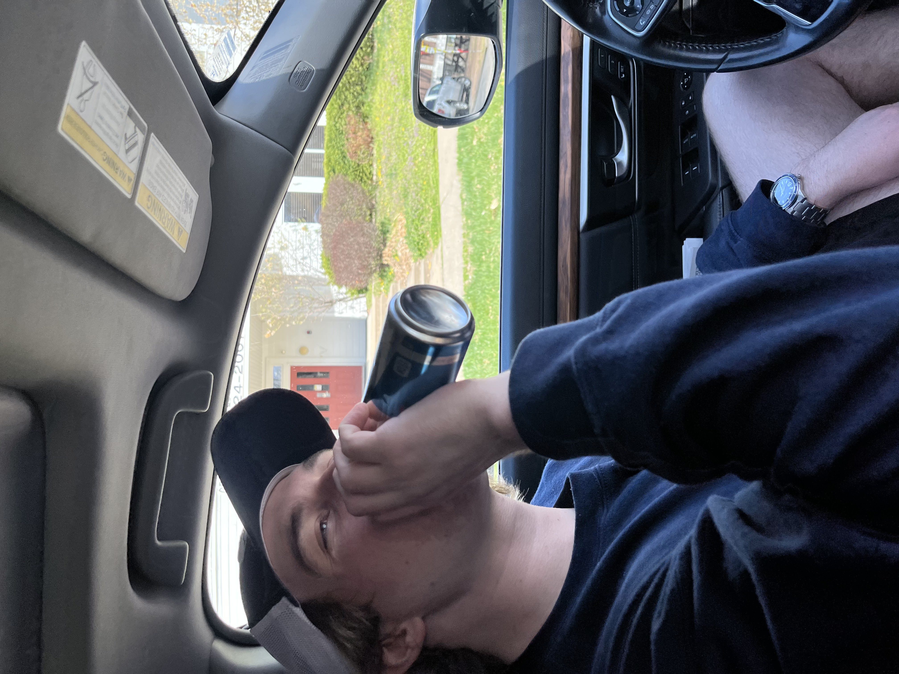
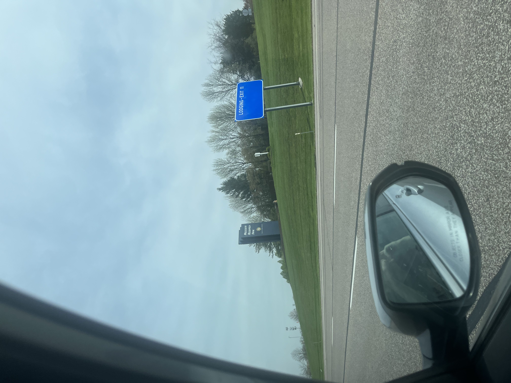
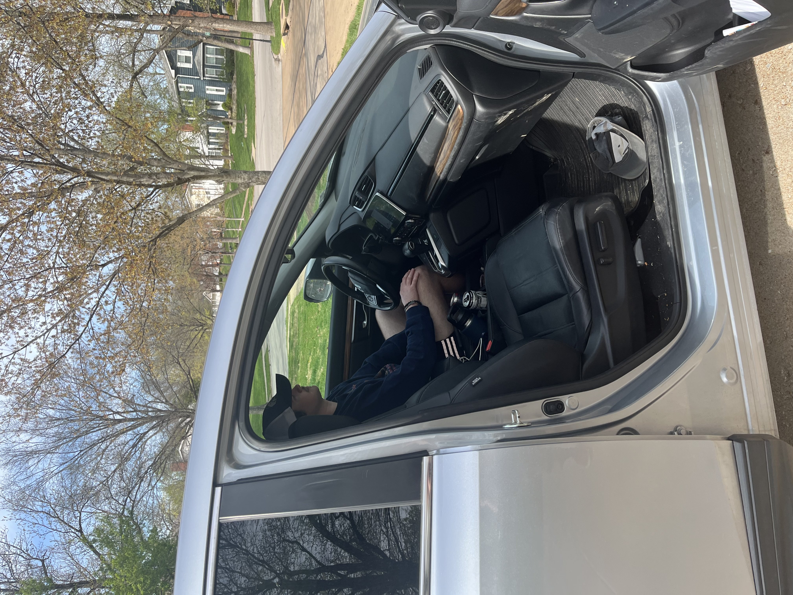
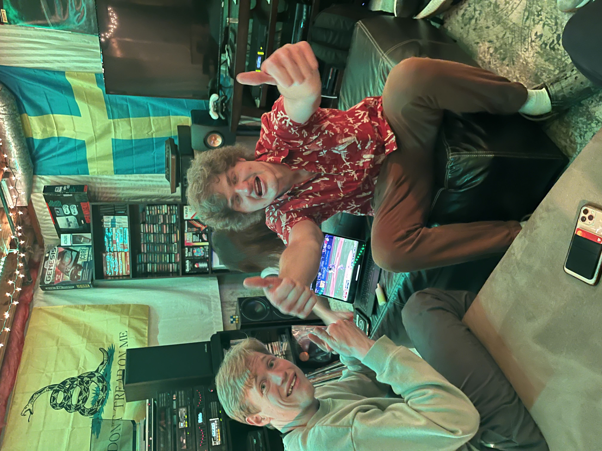
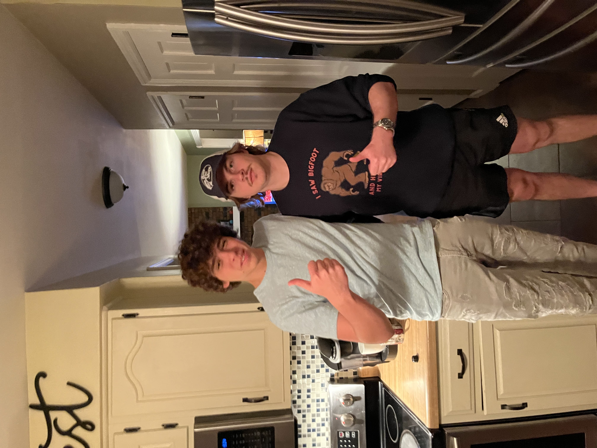

My Trip to St Louis

My roommate, Jackson Bles picking me up from the University of Missouri, Columnbia.
Jackson Bles entering the county limits of St. Louis
Jackson Bles dropping me off at my house at 4:00pm.
My other roommate, Jack Melching, and fellow Mizzou student Seth Bertrand, at our friend from Highschool, Alex Marshall’s house.
My roommate Jackson, after finally showing up at Alex’s house, re-uniting with his life guarding apprentice, Nate Gold, for the first time in over a month.